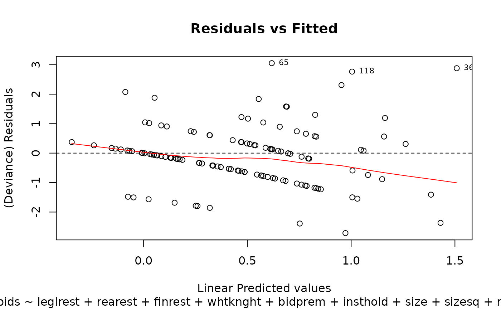
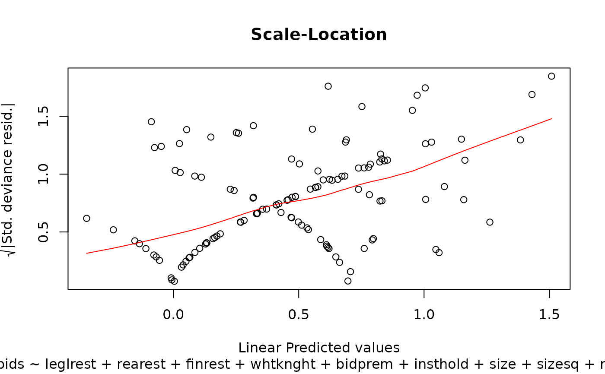

This data set gives the number of bids received by 126 US firms that were successful
targets of tender offers during the period 1978--1985, along with some explanatory
variables on the defensive actions taken by management of target firm, firm-specific
characteristics and intervention taken by federal regulators. The takeoverbids
data frame has 126 observations on 14 variables. The descriptions below are taken from
Sáez-Castillo and Conde-Sánchez (2013).
data(takeoverbids)
Format
A data frame with 126 observations on 14 variables.
- bidprem
bid price divided by price 14 working days before bid
- docno
doc no
- finrest
indicator variable for proposed change in ownership structure
- insthold
percentage of stock held by institutions
- leglrest
indicator variable for legal defence by lawsuit
- numbids
number of bids received after the initial bid
- obs
Identifier
- rearest
indicator variable for proposed changes in asset structure
- regulatn
indicator variable for Department of Justice intervention
- size
total book value of assets in billions of dollars
- takeover
Indicator. 1 if the company was being taken over
- weeks
time in weeks between the initial and final offers
- whtknght
indicator variable for management invitation for friendly third-party bid
- sizesq
book value squared
Source
Journal of Applied Econometrics data archive: http://qed.econ.queensu.ca/jae/.
References
Cameron, A.C. and Johansson, P. (1997). Count Data Regression Models using Series Expansions: with Applications. Journal of Applied Econometrics 12 203--223.
Cameron, A.C. and Trivedi P.K. (1998). Regression analysis of count data, Cambridge University Press, http://cameron.econ.ucdavis.edu/racd/racddata.html chapter 5.
Croissant Y (2011) Ecdat: Datasets for econometrics, R Package, version 0.1-6.1.
Jaggia, S. and Thosar, S. (1993). Multiple Bids as a Consequence of Target Management Resistance Review of Quantitative Finance and Accounting 3, 447--457.
Examples
### Huang (2017) Page 371--372: Underdispersed Takeover Bids data data(takeoverbids) M.bids <- glm.cmp(numbids ~ leglrest + rearest + finrest + whtknght + bidprem + insthold + size + sizesq + regulatn, data=takeoverbids) M.bids#> #> Call: glm.cmp(formula = numbids ~ leglrest + rearest + finrest + whtknght + #> bidprem + insthold + size + sizesq + regulatn, data = takeoverbids) #> #> Linear Model Coefficients: #> (Intercept) leglrest rearest finrest whtknght bidprem #> 0.9896300 0.2678800 -0.1731800 0.0677440 0.4812800 -0.6848200 #> insthold size sizesq regulatn #> -0.3678900 0.1793300 -0.0075823 -0.0375690 #> #> Dispersion (nu): 1.75 #> Degrees of Freedom: 125 Total (i.e. Null); 116 Residual #> Null Deviance: 182.3906 #> Residual Deviance: #> AIC: 382.1753 #>#> #> Call: glm.cmp(formula = numbids ~ leglrest + rearest + finrest + whtknght + #> bidprem + insthold + size + sizesq + regulatn, data = takeoverbids) #> #> Deviance Residuals: #> Min 1Q Median 3Q Max #> -2.71432 -0.70635 -0.07758 0.36084 3.05289 #> #> Linear Model Coefficients: #> Estimate Std.Err Z value Pr(>|z|) #> (Intercept) 0.989630 0.435366 2.273 0.023020 * #> leglrest 0.267879 0.122873 2.180 0.029248 * #> rearest -0.173177 0.154779 -1.119 0.263197 #> finrest 0.067744 0.174403 0.388 0.697693 #> whtknght 0.481281 0.131721 3.654 0.000258 *** #> bidprem -0.684822 0.307627 -2.226 0.026005 * #> insthold -0.367886 0.346799 -1.061 0.288780 #> size 0.179325 0.047627 3.765 0.000166 *** #> sizesq -0.007582 0.002485 -3.052 0.002276 ** #> regulatn -0.037569 0.130303 -0.288 0.773101 #> --- #> Signif. codes: 0 ‘***’ 0.001 ‘**’ 0.01 ‘*’ 0.05 ‘.’ 0.1 ‘ ’ 1 #> #> (Dispersion parameter for Mean-CMP estimated to be 1.752) #> #> #> Null deviance: 182.39 on 125 degrees of freedom #> Residual deviance: 131.20 on 116 degrees of freedom #> #> AIC: 382.1753 #>